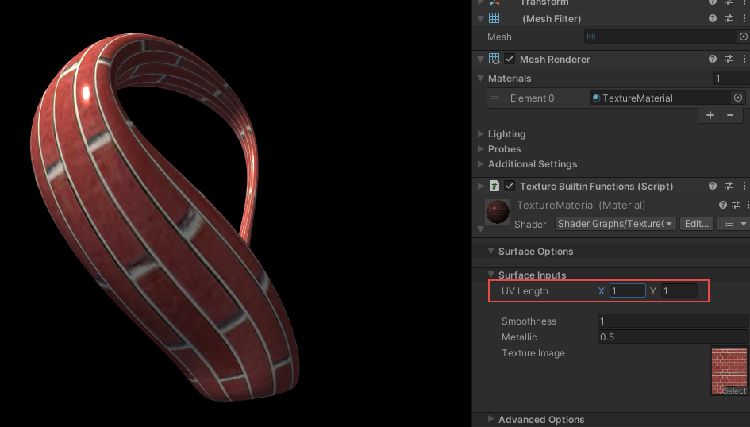
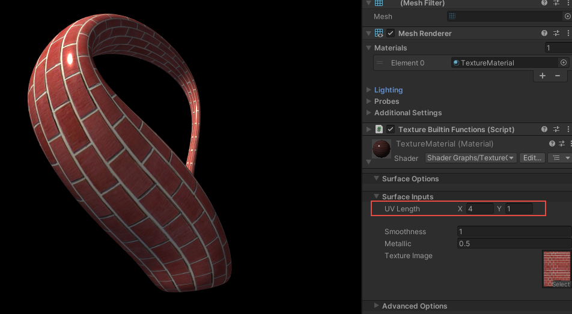
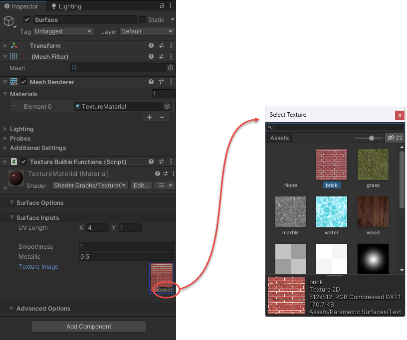
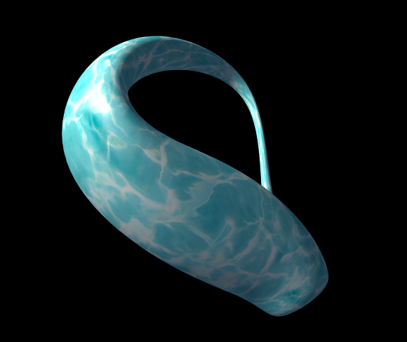
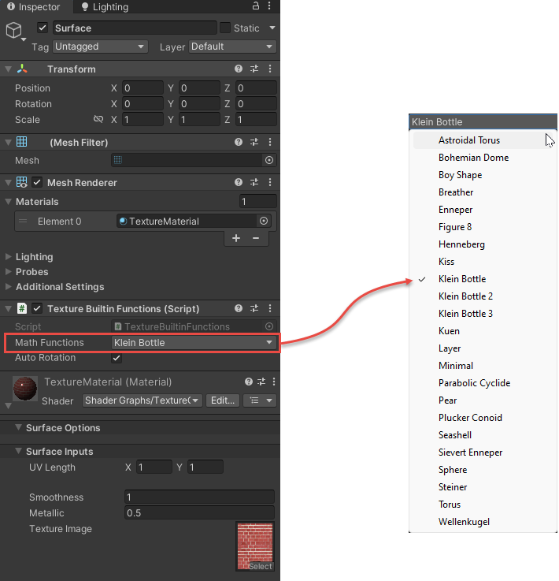
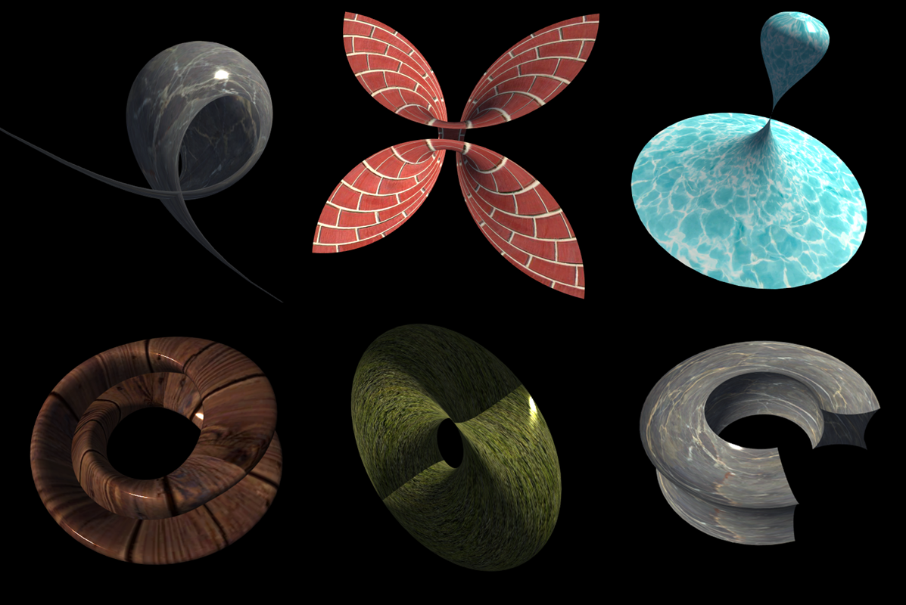

Texture Mapping
The ParametricSurfaceData.CreateData method in the ParametricSurfacesLib library also generates the UV coordinate data for a 3D parametric surface. We can utilize this UV data to map a texture image onto the 3D surface. In this demo, we will demonstrate how to incorporate texture mapping into the built-in parametric surfaces.
Set up the Scene
Navigate to the Parametric Surfaces/Scenes folder and double-click on the scene called TextureBuiltinFunctions to open the demo.
In the Scene view window, you'll see the default Klein bottle surface with the default brick texture image displayed. In the Hierarchy window, there is only one GameObject named Surface. Clicking on Surface allows you to access its Inspector. From the Inspector, you can inspect the surface's properties. In this case, the material is specified using TextureMaterial. Additionally, the surface is attached to a C# script named TextureBuiltinFunctions.cs, which exposes several properties for manipulating the parametric surface plot.
C# Script
Let's examine the C# script file used in this demo. Navigate to the Parametric Surfaces/Scripts folder and double-click on the TextureBuiltinFunctions.cs file. Below is the code list for this file:
using ParametricSurfacesLib;
using System;
using UnityEngine;
[RequireComponent(typeof(MeshFilter))]
[ExecuteInEditMode]
[Serializable]
public class TextureBuiltinFunctions : MonoBehaviour
{
public MathFunctionEnum MathFunctions = MathFunctionEnum.KleinBottle;
public bool AutoRotation = true;
private Mesh mesh;
private ParametricSurfaceData psd;
private ParametricSurfaceData.VertexData data;
void Start()
{
psd = new ParametricSurfaceData();
mesh = new Mesh();
GetComponent<MeshFilter>().mesh = mesh;
CreateSurface();
}
void Update()
{
#if UNITY_EDITOR
if (!Application.isPlaying)
{
bool needsUpdate = mesh == null ||
UnityEditor.Selection.activeGameObject == gameObject;
if (needsUpdate)
{
CreateSurface();
var mf = GetComponent<MeshFilter>();
mf.sharedMesh = mesh;
}
}
#endif
if (Application.isPlaying)
{
CreateSurface();
if (AutoRotation)
{
psd.RotateObject(transform);
}
}
}
void CreateSurface()
{
psd ??= new ParametricSurfaceData();
data = psd.GetDefaultSurfaceData(MathFunctions);
mesh.Clear();
mesh.vertices = data.Vertices;
mesh.uv = data.UVs;
mesh.triangles = data.Triangles;
mesh.RecalculateNormals();
}
}
First, we introduce the ParametricSurfacesLib library using the statement:
using ParametricSurfacesLib;
Next, we define several public fields whose values can be modified in the Inspector. However, these fields do not include colormap-related fields because in this demo, we want to use the texture mapping rather than colormaps to add colors to our 3D parametric surfaces.
The key method to utilize the ParametricSurfacesLib library is the CreateSurface method. Within this method, we first establish the relationships between the public fields defined in the Inspector and the fields implemented in the ParametricSurfaceData class in the ParametricSurfacesLib library. Next, we call the GetDefaultSurfaceData method to generate corresponding data for the built-in Klein bottle surface, including Vertices, UVs, and Triangles (or Indices). Note that we do not assign the Colors data to the mesh object because we don't use colormaps in this demo.
Finally, we call the mesh.RecalculateNormals method to calculate the normal vector data that will be used for lighting.
Start Play Mode
let's initiate the Play mode by clicking the Play button. You'll observe the default Klein bottle surface with the brick texture.
The brick image applied to the Klein bottle with the default parameter UV Length = (1, 1) results in a distorted texture map, where each brick appears elongated, as depicted in the image below:

To enhance the appearance of the *Klein bottle", we can adjust the UV Length parameter to (4, 1) in the Inspector. The resulting object is shown in the following image:

By adjusting the UV Length parameter, you can obtain an appropriate texture map for different parametric surfaces.
In the Parametric Surfaces/Textures folder, we provide several images that you can utilize to test the texture mapping on the 3D surfaces. Within the Inspector's Material section, you can select the desired texture image, as shown in the image below:

Upon selecting a different image, the appearance of the Klein bottle changes accordingly, as depicted in the following image:

Additionally, the Math Functions dropdown menu in the Texture Builtin Functions (Script) section within the Inspector enables you to choose a different mathematical function from 23 built-in functions, as illustrated below:

The image below showcases selected parametric surfaces with various texture images:

Furthermore, you can adjust other parameters such as the smoothness and metallic in the Material section within the Inspector to enhance the appearance of your 3D parametric surface. Particularly, checking the Auto Rotation box enables continuous rotation of the surface plot on your screen.